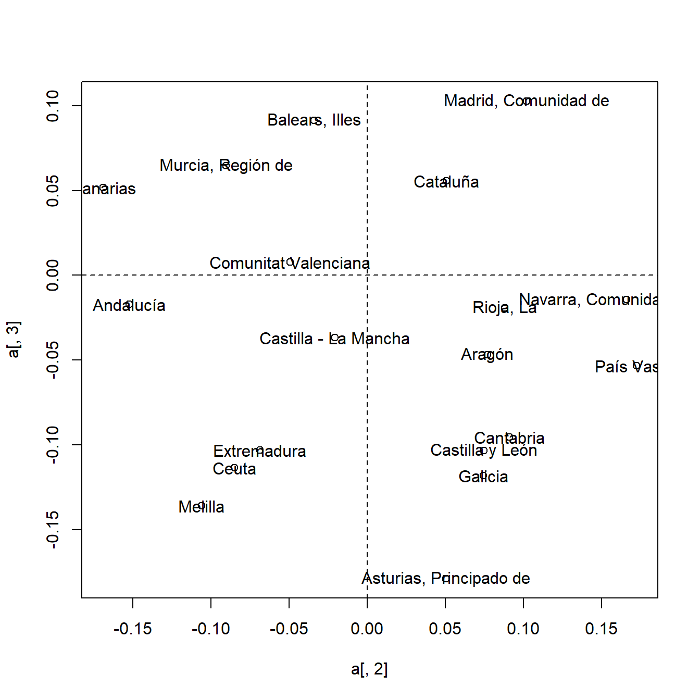
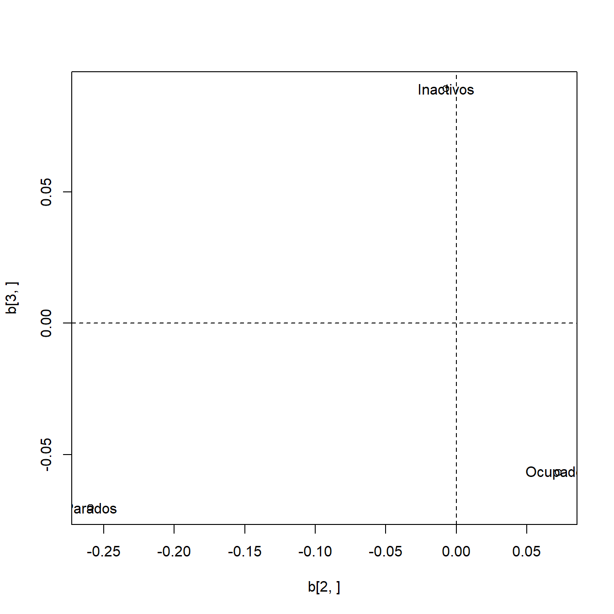
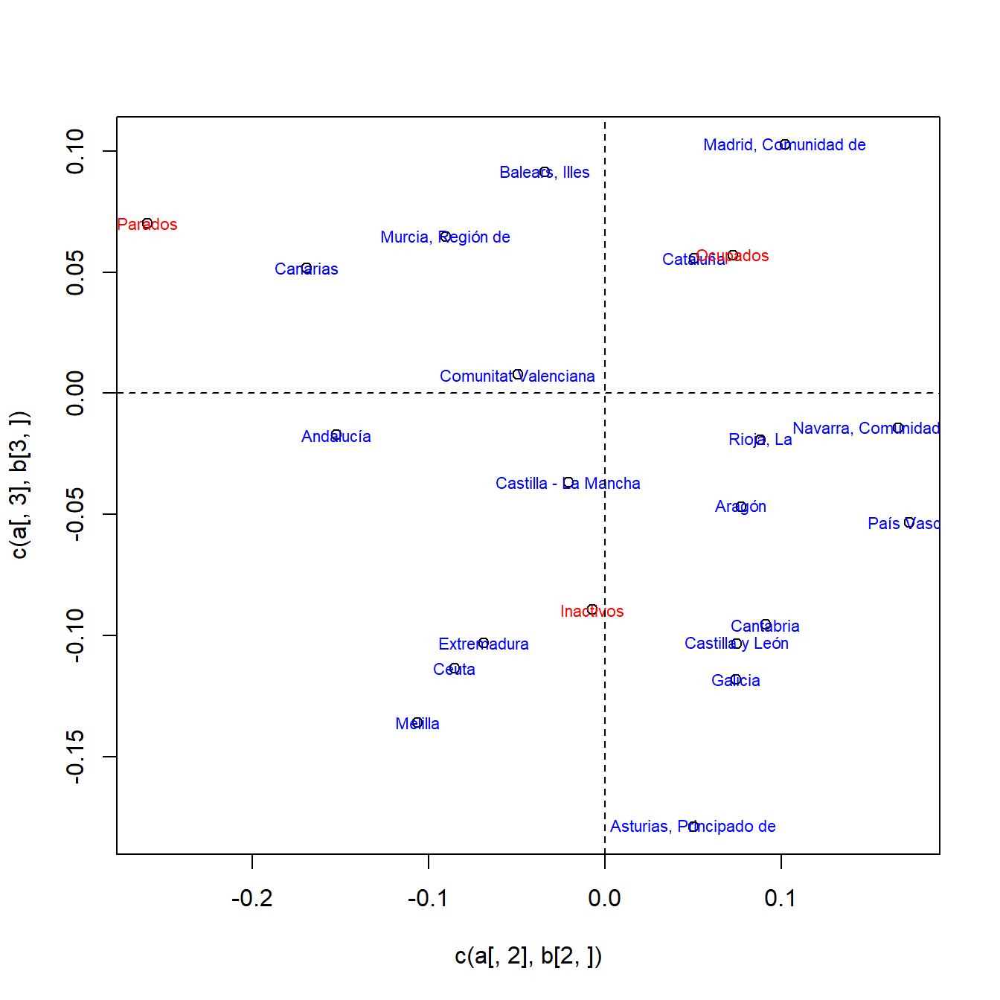
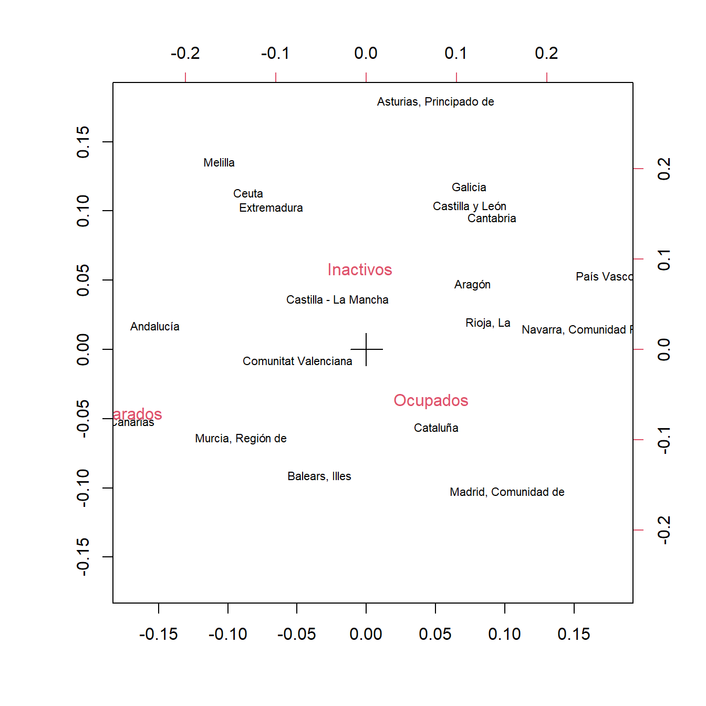

Capítulo5 Análisis de correspondencias
El Análisis de Correspondencias estudia la relación entre dos variables discretas a través de su distribución conjunta de frecuencias. Nos apoyaremos en el siguiente ejemplo.
Ejemplo. Encuesta de Población Activa (EPA, 2010). Datos de actividad y ocupación. La Encuesta de Población Activa, comúnmente conocida como EPA, es una encuesta que realiza el Instituto Nacional de Estadística (INE) y que recoge información sobre el empleo en España. Así, de esta encuesta se extraen los datos de actividad, ocupación y tasa de paro, que además se pueden relacionar con características de los individuos, como su sexo, edad o comunidad autónoma de residencia.
Vamos a estudiar la relación que puede haber entre la comunidad autónoma
y una variable que indicará si el individuo es inactivo, está ocupado o
está parado. Se define como inactivo a un individuo que no realiza
trabajo remunerado, ni está en condiciones de realizarlo, bien por falta
de capacidad (niños, ancianos o discapacitados) o por decisión propia.
Ocupado es aquél que realiza trabajo remunerado, y parado es aquél que
no lo realiza, aunque se encuentra en condiciones de trabajar y busca
empleo. Los datos del fichero epa2010.csv recogen las frecuencias (en miles de
personas) en cada comunidad autónomica y según su actividad (ocupado,
parado o inactivo).
> dat <- read.csv("data/epa2010.csv", sep = ";", dec = ",", fileEncoding = "latin1")
> dat
Comunidad.Autónoma Ocupados Parados Inactivos
1 Andalucía 2849.1 1127.4 2794.2
2 Aragón 540.3 103.3 467.5
3 Asturias, Principado de 398.0 79.6 451.8
4 Balears, Illes 450.0 128.6 320.3
5 Canarias 771.2 314.4 663.8
6 Cantabria 233.8 41.0 219.6
7 Castilla y León 996.8 186.8 962.4
8 Castilla - La Mancha 779.2 211.2 712.9
9 Cataluña 3133.5 686.8 2256.8
...Mediante un análisis de correspondencias seremos capaces de describir las relaciones que pueda haber entre la comunidad autónoma y la actividad, por ejemplo, indicando que en cierta comunidad autónoma hay un mayor porcentaje de parados, que en otra abundan especialmente los inactivos, o que en una tercera predominan los ocupados.
Las tablas de frecuencias, como la vista en el ejemplo, se conocen como tablas de contingencia. Reflejan la distribución conjunta del par formado por las dos variables discretas, que denotaremos \((x,y)\). Introduciendo cierta notación, podríamos expresar la tabla de contingencia así:
\[\begin{array}{c|ccccc|c} x\backslash y & y_1 & \ldots & y_j & \ldots & y_s & \\ \hline x_1 & n_{11} & \cdots & n_{1j} & \cdots & n_{1s} & n_{1\bullet} \\ \vdots & \vdots & & \vdots & & \vdots &\vdots \\ x_i & n_{i1} & \cdots & n_{ij} & \cdots & n_{is} & n_{i\bullet} \\ \vdots & \vdots & & \vdots & & \vdots &\vdots \\ x_r & n_{r1} & \cdots & n_{rj} & \cdots & n_{rs} & n_{r\bullet} \\ \hline & n_{\bullet 1} & \cdots & n_{\bullet j} & \cdots & n_{\bullet s} & n \\ \end{array}\]
siendo \(n_{ij}\) la frecuencia absoluta del par \((x_i,y_j)\), \((n_{1\bullet},\ldots,n_{i\bullet},\ldots,n_{r\bullet})\) la distribución marginal de la variable \(x\) y \((n_{\bullet 1},\ldots,n_{\bullet j},\ldots,n_{\bullet s})\) la distribución marginal de la variable \(y\).
Si dividimos entre el tamaño muestral, \(n\), obtenemos una tabla similar, pero ahora en términos relativos.
\[\begin{array}{c|ccccc|c} x\backslash y & y_1 & \ldots & y_j & \ldots & y_s & \\ \hline x_1 & f_{11} & \cdots & f_{1j} & \cdots & f_{1s} & f_{1\bullet} \\ \vdots & \vdots & & \vdots & & \vdots &\vdots \\ x_i & f_{i1} & \cdots & f_{ij} & \cdots & f_{is} & f_{i\bullet} \\ \vdots & \vdots & & \vdots & & \vdots &\vdots \\ x_r & f_{r1} & \cdots & f_{rj} & \cdots & f_{rs} & f_{r\bullet} \\ \hline & f_{\bullet 1} & \cdots & f_{\bullet j} & \cdots & f_{\bullet s} & 1 \\ \end{array}\]
siendo \(f_{ij}\) la frecuencia relativa del par \((x_i,y_j)\), \((f_{1\bullet},\ldots,f_{i\bullet},\ldots,f_{r\bullet})\) la distribución marginal de la variable \(x\) y \((f_{\bullet 1},\ldots,f_{\bullet j},\ldots,f_{\bullet s})\) la distribución marginal de la variable \(y\).
En primer lugar recordaremos los conceptos de independencia y asociación (lo contrario a la independencia) entre dos variables discretas. Veremos que el estadístico ji-cuadrado, que se usa habitualmente para contrastar la independencia, se puede interpretar como una medida de asociación. En este sentido, veremos que refleja la variabilidad entre distribuciones condicionadas.
A continuación abordaremos la representación de la asociación mediante un procedimiento de componentes principales y la representación simultánea de las categorías de las dos variables discretas, lo cual culmina los objetivos del análisis de correspondencias, pues en este gráfico simultáneo identificaremos las asociaciones entre categorías.
5.1 Test ji-cuadrado de independencia y distancia ji-cuadrado entre perfiles
Si el análisis de correspondencias pretende estudiar la relación entre las dos variables, la situación extrema de no relación se producirá cuando las dos variables sean independientes. Esto es equivalente a que la distribución conjunta resulte del producto de las marginales. En términos de las frecuencias observadas, ese producto de marginales da lugar a lo que se suele conocer como frecuencias esperadas, que son:
\[n_{i\bullet}n_{\bullet j}/n.\]
A partir de aquí se construye el estadístico ji-cuadrado para contrastar la independencia comparando las frecuencias observadas con las esperadas:
\[\chi^2=\sum_{i=1}^r\sum_{j=1}^s \frac{\left(n_{ij}-n_{i\bullet}n_{\bullet j}/n\right)^2}{n_{i\bullet}n_{\bullet j}/n}.\]
Bajo la hipótesis nula de independencia, el estadístico ji-cuadrado tiene una distribución ji-cuadrado con \((r-1)\times (s-1)\) grados de libertad.
Además del contraste de independencia, podemos pensar que el estadístico ji-cuadrado es una medida de discrepancia respecto de la independencia, y por tanto es una medida de asociación entre las categorías de ambas variables. Con este fin, vamos a expresar el estadístico ji–cuadrado en términos de frecuencias relativas:
\[\chi^2=\sum_{i=1}^r\sum_{j=1}^s \frac{\left(f_{ij}n-f_{i\bullet}f_{\bullet j}n\right)^2}{f_{i\bullet}f_{\bullet j}n} =n\sum_{i=1}^r\sum_{j=1}^s \frac{\left(f_{ij}-f_{i\bullet}f_{\bullet j}\right)^2}{f_{i\bullet}f_{\bullet j}}.\]
Ahora observamos que el estadístico ji-cuadrado, representado en cierta forma, admite una interpretación interesante:
\[\frac{\chi^2}{n}=\sum_{i=1}^r\sum_{j=1}^s \frac{\left(f_{i\bullet}\frac{f_{ij}}{f_{i\bullet}} -f_{i\bullet}f_{\bullet j}\right)^2}{f_{i\bullet}f_{\bullet j}} =\sum_{i=1}^r f_{i\bullet} \sum_{j=1}^s \left(\frac{f_{ij}}{f_{i\bullet}}-f_{\bullet j}\right)^2 \frac{1}{f_{\bullet j}}=\sum_{i=1}^r f_{i\bullet} d^2(\bm{r_i},\bm{m_y})\]
siendo \(\bm{r_i}=\left(\frac{f_{i1}}{f_{i\bullet}},\ldots,\frac{f_{is}}{f_{i\bullet}}\right)^\prime{}\) la distribución de \(y\) condicionada a \(x=x_i\), también conocida como perfil de fila \(i\)-ésimo; \(\bm{m_y}=\left(f_{\bullet 1},\ldots,f_{\bullet s}\right)^\prime{}\) la distribución marginal de \(y\); y \(d^2(\bm{r_i},\bm{m_y})\) una distancia entre el perfil \(i\)-ésimo y la distribución marginal. A esta distancia se la conoce como distancia ji-cuadrado y a \(\chi^2/n\) como inercia.
La tabla siguiente contiene los perfiles de fila, junto con la distribución marginal de \(y\):
\[\begin{array}{c|ccccc|c} x\backslash y & y_1 & \ldots & y_j & \ldots & y_s & \\ \hline x_1 & f_{11}/f_{1\bullet} & \cdots & f_{1j}/f_{1\bullet} & \cdots & f_{1s}/f_{1\bullet} & 1 \\ \vdots & \cdots & \cdots & \cdots & \cdots & \cdots & \vdots \\ x_i & f_{i1}/f_{i\bullet} & \cdots & f_{ij}/f_{i\bullet} & \cdots & f_{is}/f_{i\bullet} & 1 \\ \vdots & \cdots & \cdots & \cdots & \cdots & \cdots & \vdots \\ x_r & f_{r1}/f_{r\bullet} & \cdots & f_{rj}/f_{r\bullet} & \cdots & f_{rs}/f_{r\bullet} & 1 \\ \hline & f_{\bullet 1} & \cdots & f_{\bullet j} & \cdots & f_{\bullet s} & 1 \\ \end{array}\]
De este modo, el estadístico ji-cuadrado (dividido entre n) es una media ponderada de las distancias ji-cuadrado de los perfiles de fila a la distribución marginal de \(y\). Si observamos que la distribución marginal se puede obtener como media de los perfiles de fila, veremos el estadístico ji-cuadrado como una medida de variabilidad de los perfiles en torno a su media, \(\bm{m_y}\). Bajo hipótesis de independencia, los perfiles han de ser muy similares entre sí y, por tanto, muy similares a la distribución marginal, dando lugar a un valor pequeño de la variabilidad, medida por el estadístico ji-cuadrado.
De igual modo se puede interpretar el estadístico ji-cuadrado en términos de distancias ji-cuadrado entre perfiles de columna:
\[\frac{\chi^2}{n}=\sum_{i=1}^r\sum_{j=1}^s \frac{\left(f_{\bullet j}\frac{f_{ij}}{f_{\bullet j}} -f_{i\bullet}f_{\bullet j}\right)^2}{f_{i\bullet}f_{\bullet j}} =\sum_{j=1}^s f_{\bullet j} \sum_{i=1}^r \left(\frac{f_{ij}}{f_{\bullet j}}-f_{i \bullet}\right)^2 \frac{1}{f_{i \bullet}}=\sum_{j=1}^s f_{\bullet j} d^2(\bm{c_j},\bm{m_x})\]
siendo \(\bm{c_j}=\left(\frac{f_{1j}}{f_{\bullet j}},\ldots,\frac{f_{rj}}{f_{\bullet j}}\right)^\prime{}\) la distribución de \(x\) condicionada a \(y=y_j\), también conocida como perfil de columna \(j\)-ésimo; \(\bm{m_x}=\left(f_{1 \bullet},\ldots,f_{r \bullet}\right)^\prime{}\) la distribución marginal de \(x\); y \(d^2(\bm{c_j},\bm{m_x})\) la distancia ji-cuadrado entre el perfil \(j\)-ésimo y la distribución marginal.
La tabla siguiente contiene los perfiles de columna, junto con la distribución marginal de \(x\):
\[\begin{array}{c|ccccc|c} x\backslash y & y_1 & \ldots & y_j & \ldots & y_s & \\ \hline x_1 & f_{11}/f_{\bullet 1} & \vdots & f_{1j}/f_{\bullet j} & \vdots & f_{1s}/f_{\bullet s} & f_{1 \bullet} \\ \vdots & \vdots & \vdots & \vdots & \vdots & \vdots & \vdots \\ x_i & f_{i1}/f_{\bullet 1} & \vdots & f_{ij}/f_{\bullet j} & \vdots & f_{is}/f_{\bullet s} & f_{i \bullet} \\ \vdots & \vdots & \vdots & \vdots & \vdots & \vdots & \vdots \\ x_r & f_{r1}/f_{\bullet 1} & \vdots & f_{rj}/f_{\bullet j} & \vdots & f_{rs}/f_{\bullet s} & f_{r \bullet} \\ \hline & 1 & \cdots & 1 & \cdots & 1 & 1 \\ \end{array}\]
El análisis de correspondencias es un procedimiento de representación e interpretación de la variabilidad resultante del estadístico ji-cuadrado. Por tanto, si aceptamos la hipótesis de independencia no procede llevar a cabo un Análisis de Correspondencias. En caso de rechazo, habremos concluido que existe asociación, y mediante el Análisis de Correspondencias se realiza un estudio de dicha asociación.
5.2 Representación de los perfiles de fila
5.2.1 Perfiles de fila estandarizados
Pensemos en la descomposición de la ji-cuadrado a través de los perfiles de fila. Los perfiles de fila se pueden concebir como vectores del espacio \({\Bbb R}^s\) y su variabilidad se encuentra medida a través de la distancia ji-cuadrado en dicho espacio:
\[d^2(\bm{u},\bm{v})=\sum_{j=1}^s (u_j-v_j)^2 \frac{1}{f_{\bullet j}}\] siendo \(\bm{u}=(u_1,\ldots,u_s)^\prime{}\) y \(\bm{v}=(v_1,\ldots,v_s)^\prime{}\) vectores de \({\Bbb R}^s\). Si dividimos las coordenadas de cada perfil de fila por \(\left(\frac{1}{\sqrt{f_{\bullet 1}}},\ldots,\frac{1}{\sqrt{f_{\bullet s}}}\right)\) entonces podemos considerar los vectores
\[\bm{r_i^e}=\left(\frac{f_{i1}}{f_{i\bullet}\sqrt{f_{\bullet 1}}},\ldots, \frac{f_{is}}{f_{i\bullet}\sqrt{f_{\bullet s}}}\right)^\prime{} \qquad i\in \{1,\ldots,r\}\] dotados ahora de la distancia euclídea ordinaria, ya que la inercia total se puede expresar como la media ponderada de las distancias euclídeas de estos vectores a su media: \[\frac{\chi^2}{n} =\sum_{i=1}^r f_{i\bullet} \sum_{j=1}^s \left(\frac{f_{ij}}{f_{i\bullet}\sqrt{f_{\bullet j}}}-\sqrt{f_{\bullet j}}\right)^2.\]
Esto coincide con la traza de la matriz de covarianzas de los perfiles estandarizados, como medida global de variabilidad, y reduce el estudio a un análisis de componentes principales sobre los perfiles estandarizados.
5.2.2 Análisis de componentes principales de los perfiles estandarizados
Formemos una matriz cuyas filas sean los perfiles de fila estandarizados:
\[\bm{X}=\left(\frac{f_{ij}}{f_{i\bullet}\sqrt{f_{\bullet j}}}\right)_{i,j} =\left(\begin{array}{c} {\bm{r_1^e}}^\prime{} \\ \vdots \\ {\bm{r_r^e}}^\prime{} \end{array}\right).\]
Si esta matriz se piensa como una matriz de observaciones donde cada columna es una variable y cada fila es un individuo, ponderado por la frecuencia marginal \(f_{i\bullet}\) que le corresponda, entonces el vector de medias es: \(\bm{m_y^e}=\left(\sqrt{f_{\bullet 1}},\ldots,\sqrt{f_{\bullet s}}\right)^\prime{}\) y la matriz de covarianzas:
\[\bm{\Sigma_r}=\bm{X}^{\prime} \bm{D_r} \bm{X} - \bm{m_y^e}{\bm{m_y^e}}^\prime{}\] siendo \(\bm{D_r}=\textnormal{diag}(f_{1\bullet},\ldots,f_{r\bullet})\).
El análisis de componentes principales de los perfiles de fila estandarizados pasa por diagonalizar la matriz de covarianzas \(\bm{\Sigma_r}\). Para ello, el resultado que sigue es muy útil.
Resultado. La matriz \(\bm{X^{\prime} D_r X}\) es una matriz simétrica y semidefinida positiva, y tiene al vector \(\bm{m_y^e}\) como vector propio de valor propio uno.
En base a este resultado, \(\bm{m_y^e}(\bm{m_y^e})^{\prime}\) no es más que el primer término de la descomposición espectral de \(\bm{X^{\prime} D_r X}\), \(\bm{m_y^e}\) es un autovector de \(\bm{\Sigma_r}\) de autovalor cero, y el resto de autovectores y autovalores de \(\bm{\Sigma_r}\) y \(\bm{X^{\prime} D_r X}\) coinciden.
Esta pérdida de una dimensión en el espacio de los perfiles de fila se debe a que los perfiles de fila verifican:
\[\sum_{j=1}^s \frac{f_{i j}}{f_{i\bullet}}=1 \qquad \forall i\in\{1,\ldots,r\} \qquad \left[\bm{r_i}^\prime{}\bm{1_s}=1\right]\] y, en consecuencia, los perfiles de fila estandarizados:
\[\sum_{j=1}^s \sqrt{f_{\bullet j}} \frac{f_{i j}}{\sqrt{f_{\bullet j}}f_{i\bullet}}=1 \qquad \forall i\in\{1,\ldots,r\} \qquad \left[{\bm{r_i^e}}^\prime{}\bm{m_y^e}=1\right].\]
De este modo, en ambos casos se encuentran contenidos en un hiperplano, y el vector característico de dicho hiperplano (\(\bm{m_y^e}\) en el caso de los perfiles estandarizados) es un autovector cuyo autovalor asociado es cero.
Para completar la comprensión de este hecho, obtenemos una nueva expresión para la inercia:
\[\frac{\chi^2}{n} =\sum_{i=1}^r\sum_{j=1}^s \frac{\left(f_{ij}-f_{i\bullet}f_{\bullet j}\right)^2}{f_{i\bullet}f_{\bullet j}} =\sum_{i=1}^r\sum_{j=1}^s \frac{f_{ij}^2}{f_{i\bullet}f_{\bullet j}}-1=\textnormal{traza} \left(\bm{X^{\prime} D_r X}\right)-1 =\textnormal{traza} \left(\bm{\Sigma_r}\right).\] La segunda igualdad se obtiene desarrollando el cuadrado. Haber obtenido la traza de la matriz de covarianzas \(\bm{\Sigma_r}\) no es más que lo que cabía esperar. Así, pensemos en la diagonalización
\[\bm{X^{\prime} D_r X}=\bm{V}\bm{\Lambda}\bm{V}^{\prime}\] siendo \(\bm{V}=(\bm{m_y^e}, \bm{v_2}, \ldots, \bm{v_s})\) la matriz cuyas columnas son los autovectores y \(\bm\Lambda\) la matriz diagonal que contiene los autovalores correspondientes ordenados de mayor a menor, es decir, \(\bm\Lambda=\textnormal{diag} \left(1,\lambda_2,\ldots,\lambda_{s}\right)\). Entonces las coordenadas de las filas respecto de las componentes principales vendrán dadas por las columnas segunda, tercera y sucesivas de la matriz
\[\bm{A}=\bm{XV} =\left(\begin{array}{c} {\bm{r_1^e}}^\prime{} \\ \vdots \\ {\bm{r_r^e}}^\prime{} \end{array}\right) \left(\bm{m_y^e}, \bm{v_2}, \ldots, \bm{v_s}\right) =\left(\begin{array}{ccccc} 1 & a_{12} & a_{13} & \cdots & a_{1s} \\ \vdots & \vdots & \vdots & \ddots & \vdots \\ 1 & a_{r2} & a_{r3} & \cdots & a_{rs} \end{array}\right).\]
Estas coordenadas verifican las siguientes propiedades:
Las coordenadas tienen media ponderada cero. \(\left(\ \sum_{i=1}^r f_{i\bullet} a_{ij}=0\ \ \forall j\in\{2,\ldots,s\}\ \right).\)
Las distancias euclídeas entre los vectores de coordenadas de dos filas coincide con la distancia euclídea entre los correspondientes perfiles estandarizados, la cual a su vez coincidía con la distancia ji cuadrado entre los perfiles de fila originarios.
5.2.3 Contribuciones
De la segunda propiedad se deduce que la distancia al centroide, esto es, al perfil medio, de cada perfil de fila se puede expresar: \[d^2(\bm{r_i},\bm{m_y})=\sum_{k=2}^s a_{ik}^2\] y esto, multiplicado por \(f_{i\bullet}\), lo concebimos como la contribución del perfil de fila \(i\)-ésimo a la inercia total.
El análisis de componentes principales de los perfiles estandarizados da lugar a una descomposición de la inercia como suma de los autovalores
\[\frac{\chi^2}{n}=\textnormal{traza}(\bm{\Sigma_r})=\lambda_2+\lambda_3+\ldots+\lambda_s\] siendo
\[\lambda_k = \bm{v_k}^{\prime} \bm{X}^{\prime} \bm{D_r X v_k} = \sum_{i=1}^r f_{i\bullet} a_{ik}^2.\] Para una fácil comprensión de la segunda igualdad, debe recordarse que \(\bm{X v_k}\) es el vector columna (columna \(k\)-ésima de la matriz \(\bm{A}\)) que contiene las cooordenadas de cada perfil de fila respecto de la componente \(k\)-ésima.
La tabla siguiente es una descomposición de la inercia total en perfiles de fila y componentes:
\[\begin{array}{c|ccccc|c} & \mbox{ Componente 2} & \cdots & \mbox{ Componente k} & \cdots & \mbox{ Componente s} & \\ \hline \mbox{ Perfil 1} & f_{1\bullet} a_{12}^2 & \cdots & f_{1\bullet} a_{1k}^2 & \cdots & f_{1\bullet} a_{1s}^2 & \sum_{k=2}^s f_{1\bullet} a_{1k}^2 \\ \vdots & \vdots & & \vdots & & \vdots & \vdots \\ \mbox{ Perfil i} & f_{i\bullet} a_{i2}^2 & \cdots & f_{i\bullet} a_{ik}^2 & \cdots & f_{i\bullet} a_{is}^2 & \sum_{k=2}^s f_{i\bullet} a_{ik}^2 \\ \vdots & \vdots & & \vdots & & \vdots & \vdots \\ \mbox{ Perfil r} & f_{r\bullet} a_{r2}^2 & \cdots & f_{r\bullet} a_{rk}^2 & \cdots & f_{r\bullet} a_{rs}^2 & \sum_{k=2}^s f_{1\bullet} a_{rk}^2 \\ \hline & \sum_{i=1}^r f_{i\bullet} a_{i 2}^2 & \cdots & \sum_{i=1}^r f_{i\bullet} a_{i k}^2 & \cdots & \sum_{i=1}^r f_{i\bullet} a_{i s}^2 & \chi^2/n \end{array}\]
La proporción de variabilidad explicada si tomamos \((k-1)\) componentes (\(k\leq s\)) será: \[\frac{\lambda_2+\ldots+\lambda_k}{\lambda_2+\ldots+\lambda_{s}}\] y sería como quedarnos con las \((k-1)\) primeras columnas (de la \(2\) a la \(k\)) tanto en la matriz \(\bm{A}\) como en la tabla anterior.
5.3 Representación de los perfiles de columna
5.3.1 Análisis de componentes principales de los perfiles estandarizados
El análisis anterior de los perfiles de fila se puede repetir de la misma manera para los perfiles de columna. Los pasos se llevan a cabo en perfecta analogía con el caso anterior. Resumiendo, tendríamos que la inercia total se puede expresar como media ponderada de las distancias ji-cuadrado de los perfiles de columna (a su media), o equivalentemente, como las distancias euclídeas de los perfiles estandarizados (a su media correspondiente):
\[\frac{\chi^2}{n} =\sum_{j=1}^s f_{\bullet j} \sum_{i=1}^r \left(\frac{f_{ij}}{f_{\bullet j}\sqrt{f_{i \bullet}}}-\sqrt{f_{i \bullet}}\right)^2 =\sum_{j=1}^s f_{\bullet j} \left\|\bm{c_i^e}-\bm{m_x^e}\right\|^2.\]
Formamos la matriz \(\bm{Y}\), cuyas columnas son los perfiles de columna estandarizados:
\[\bm{Y}=\left(\frac{f_{ij}}{f_{\bullet j}\sqrt{f_{i \bullet}}}\right)_{i,j} =\left( \bm{c_1^e}, \ldots, \bm{c_s^e} \right)\] la cual se concibe como una matriz de observaciones transpuesta, donde cada fila es una variable y cada columna es un individuo, ponderado por la frecuencia marginal \(f_{\bullet j}\) que le corresponda. Entonces el vector de medias es: \(\bm{m_x^e}=\left(\sqrt{f_{1 \bullet}},\ldots,\sqrt{f_{r \bullet}}\right)^{\prime}\) y la matriz de covarianzas:
\[\bm{\Sigma_s}=\bm{Y D_s Y^{\prime}} - \bm{m_x^e} {\bm{m_x^e}}^{\prime}\] siendo \(\bm{D_s}=\textnormal{diag}(f_{\bullet 1},\ldots,f_{\bullet s})\).
De nuevo se aplica el Análisis de Componentes Principales, mediante la diagonalización de la matriz de covarianzas \(\bm{\Sigma_s}\). Surge entonces el resultado siguiente.
Resultado. La matriz \(\bm{Y D_s Y^{\prime}}\) es una matriz simétrica y semidefinida positiva, y tiene al vector \(\bm{m_x^e}\) como vector propio de valor propio uno.
En base a este resultado, \(\bm{m_x^e}{\bm{m_x^e}}^{\prime}\) no es más que el primer término de la descomposición espectral de \(\bm{Y D_s Y^{\prime}}\), \(\bm{m_x^e}\) es un autovector de \(\bm{\Sigma_s}\) de autovalor cero, y el resto de autovectores y autovalores de \(\bm{\Sigma_s}\) e \(\bm{Y D_s Y^{\prime}}\) coinciden.
De nuevo se pierde una dimensión en el espacio de los perfiles de columna, puesto que verifican una restricción lineal obvia, consecuencia de que sus componentes suman uno. Esta restricción se convierte en los perfiles de columna estandarizados, en que pertenecen al hiperplano cuyo vector característico es \(\bm{m_x^e}\). Así, \[\frac{\chi^2}{n} =\mbox{traza} \left(\bm{Y D_s Y^{\prime}}\right)-1 =\mbox{traza} \left(\bm{\Sigma_s}\right).\]
Entonces, la diagonalización conduce a
\[\bm{Y D_s Y^{\prime}}=\bm{W}\bm{\Lambda} \bm{W}^{\prime}\] siendo \(\bm{W}=\left( \bm{m_x^e}, \bm{w_2}, \ldots, \bm{w_r}\right)\) la matriz cuyas columnas son los autovectores y \(\bm{\Lambda}\) la la matriz diagonal que contiene los autovalores correspondientes ordenados de mayor a menor, es decir \(\bm{\Lambda}=\mbox{diag} \left(1,\lambda_2,\ldots,\lambda_r \right)\). Ahora las coordenadas de las columnas respecto de las componentes principales vendrán dadas por las filas segunda, tercera y sucesivas de la matriz
\[\bm{B}=\bm{W}^{\prime}\bm{Y} =\left(\begin{array}{c} {\bm{m_x^e}}^{\prime} \\ \bm{w_2}^{\prime} \\ \vdots \\ \bm{w_r}^{\prime} \end{array} \right) \left(\bm{c_1^e}, \ldots, \bm{c_s^e} \right) =\left(\begin{array}{ccc} 1& \cdots & 1 \\ b_{21} & \cdots & b_{2s} \\ b_{31} & \cdots & b_{3s} \\ \vdots & \ddots & \vdots \\ b_{r1} & \cdots & b_{rs} \end{array}\right).\]
Estas coordenadas verifican las siguientes propiedades:
Las coordenadas tienen media ponderada cero. \(\left(\ \sum_{j=1}^s f_{\bullet j} b_{ij}=0\ \ \forall i\in\{2,\ldots,r\}\ \right).\)
Las distancias euclídeas entre los vectores de coordenadas de dos columnas coincide con la distancia euclídea entre los correspondientes perfiles estandarizados, la cual a su vez coincidía con la distancia ji cuadrado entre los perfiles de columna originarios.
5.3.2 Contribuciones
De la segunda propiedad se deduce que la distancia al centroide, esto es, al perfil medio, de cada perfil de columna se puede expresar:
\[d^2(\bm{c_j},\bm{m_x})=\sum_{k=2}^r b_{k j}^2\] y esto, multiplicado por \(f_{\bullet j}\), lo concebimos como la contribución del perfil de columna \(j\)-ésimo a la inercia total.
El análisis de componentes principales de los perfiles estandarizados da lugar a una descomposición de la inercia como suma de los autovalores
\[\frac{\chi^2}{n}=\mbox{traza}(\bm{\Sigma_s})=\lambda_2+\lambda_3+\ldots+\lambda_r\] siendo
\[\lambda_k = \bm{w_k}^{\prime} \bm{Y D_s Y^{\prime}} \bm{w_k} = \sum_{j=1}^r f_{\bullet j} b_{kj}^2.\] Para una fácil comprensión de la segunda igualdad, debe recordarse que \(\bm{w_k}^{\prime}\bm{Y}\) es el vector fila (fila \(k\)-ésima de la matriz \(\bm{B}\)) que contiene las cooordenadas de cada perfil de columna respecto de la componente \(k\)-ésima.
La tabla siguiente es una descomposición de la inercia total en perfiles de columna y componentes:
\[\begin{array}{c|ccccc|c} & \mbox{ Perfil 1} & \cdots & \mbox{ Perfil j} & \cdots & \mbox{ Perfil s} & \\ \hline \mbox{ Componente 2} & f_{\bullet 1} b_{21}^2 & \cdots & f_{\bullet j} b_{2j}^2 & \cdots & f_{\bullet s} b_{2s}^2 & \sum_{j=1}^s f_{\bullet j} b_{2j}^2 \\ \vdots & \vdots & & \vdots & & \vdots & \vdots \\ \mbox{ Componente k} & f_{\bullet 1} b_{k1}^2 & \cdots & f_{\bullet j} b_{kj}^2 & \cdots & f_{\bullet s} b_{ks}^2 & \sum_{j=1}^s f_{\bullet j} b_{kj}^2 \\ \vdots & \vdots & & \vdots & & \vdots & \vdots \\ \mbox{ Componente r} & f_{\bullet 1} b_{r1}^2 & \cdots & f_{\bullet j} b_{rj}^2 & \cdots & f_{\bullet s} b_{rs}^2 & \sum_{j=1}^s f_{\bullet j} b_{rj}^2 \\ \hline & \sum_{k=2}^r f_{\bullet 1} b_{k 1}^2 & \cdots & \sum_{k=2}^r f_{\bullet j} b_{k j}^2 & \cdots & \sum_{k=2}^r f_{\bullet s} b_{k s}^2 & \chi^2/n \end{array}\]
La proporción de variabilidad explicada si tomamos \((k-1)\) componentes (\(k\leq r\)) será:
\[\frac{\lambda_2+\ldots+\lambda_k}{\lambda_2+\ldots+\lambda_{r}}\] y sería como quedarnos con las \((k-1)\) primeras columnas (de la \(2\) a la \(k\)) tanto en la matriz \(\bm{B}\) como en la tabla anterior.
5.4 Representación simultánea de los perfiles de fila y columna
Consideremos la matriz
\[\bm{Z}=\left( \frac{f_{ij}}{\sqrt{f_{i\bullet}}\sqrt{f_{\bullet j}}} \right)_{i,j}.\]
Observemos que
\[\bm{X}=\bm{D_r}^{-1}\bm{F} \bm{D_s}^{-1/2},\ \ \ \ \bm{Y}=\bm{D_r}^{-1/2} \bm{F} \bm{D_s}^{-1},\ \ \ \ \bm{Z}=\bm{D_r}^{-1/2} \bm{F}\bm{D_s}^{-1/2}\] siendo \(\bm{F}=\left(f_{ij}\right)_{i,j}\). Entonces
\(\bm{X}^{\prime} \bm{D_r} \bm{X}=\bm{Z}^{\prime} \bm{Z}\qquad \bm{Y \bm{D_s} \bm{Y}^{\prime}}=\bm{Z}\bm{Z}^{\prime}.\)
Si \(\bm{v}\) es autovector de \(\bm{Z}^{\prime} \bm{Z}\) con autovalor asociado \(\lambda\), entonces \(\bm{w}=\bm{Z}\bm{v}\) es autovector de \(\bm{Z}\bm{Z}^{\prime}\) con autovalor asociado \(\lambda\).
Por tanto, ambas matrices tienen los mismos autovalores, mientras que los autovectores mantienen la relación que se acaba de indicar. Como consecuencia, el número de autovalores no nulos será \(k_0\leq \min\{r,s\}\). En lo que sigue supondremos una matriz común de autovalores no nulos \(\bm{D_{\lambda}}\) de orden \(k_0\), y los autovectores y coordenadas se referirán únicamente a las \(k_0\) componentes asociadas a estos autovalores no nulos, tanto cuando se interpreten en el espacio de filas como en el de columnas.
Recordemos la diagonalización
\[\bm{Z}^{\prime} \bm{Z}= \bm{X}^{\prime} \bm{D_r} \bm{X}= \bm{V}\bm{D_{\lambda}}\bm{V}^{\prime}.\] Entonces las columnas de \(\bm{ZV}\) son los autovectores de \(\bm{Z}\bm{Z}^{\prime}\), que una vez normalizadas darán lugar a la matriz ortogonal para la diagonalización \(\bm{Z}\bm{Z}^{\prime}= \bm{W}\bm{D_{\lambda}} \bm{W}^{\prime}\):
\[\bm{W}=\bm{Z}\bm{VD_{\lambda}}^{-1/2}.\] Finalmente, las coordenadas de los perfiles de columna eran las columnas de la matriz
\[\bm{B}=\bm{W}^{\prime}\bm{Y}.\] Vamos a deducir la relación que existe entre estas coordenadas y las coordenadas de los perfiles de fila, \(\bm{A}=\bm{XV}\).
\[\begin{aligned} \bm{B}&= \bm{W}^{\prime}\bm{Y}= \left(\bm{Z}\bm{V}\bm{D_{\lambda}}^{-1/2}\right)^{\prime} \bm{Y} =\bm{D_{\lambda}}^{-1/2}\bm{V}^{\prime} \bm{Z}^{\prime} \bm{Y} \\ &=\bm{D_{\lambda}}^{-1/2} \bm{V}^{\prime} \left(\bm{D_r}^{-1/2}\bm{F}\bm{D_s}^{-1/2}\right)^{\prime} \bm{D_r}^{-1/2}\bm{F}\bm{D_s}^{-1} =\bm{D_{\lambda}}^{-1/2} \bm{V}^{\prime} \bm{D_s}^{-1/2} \bm{F}^{\prime} \bm{D_r}^{-1} \bm{F}\bm{D_s}^{-1} \\ &=\bm{D_{\lambda}}^{-1/2} \bm{A}^{\prime} \bm{F}\bm{D_s}^{-1}. \end{aligned}\] En la última igualdad se ha utilizado que \(\bm{A}=\bm{X}\bm{V}=\bm{D_r}^{-1}\bm{F}\bm{D_s}^{-1/2}\bm{V}\). Pero el resultado obtenido se puede escribir así:
\[b_{kj}=\frac{1}{\sqrt{\lambda_k}} \left( \frac{f_{1j}}{f_{\bullet j}} a_{1k} +\ldots + \frac{f_{rj}}{f_{\bullet j}} a_{rk} \right)\] de modo que la coordenada del perfil de columna \(j\)-ésimo en la componente \(k\)-ésima es una combinación ponderada de las coordenadas de cada perfil de fila en dicha componente, siendo los pesos de tal ponderación las frecuencias relativas de cada categoría de la variable \(x\) condicionada a la categoría j de \(y\). Así, si una categoría i presenta alta frecuencia condicionada pesará más en esta combinación, aproximando hacia sí la coordenada de la categoría \(j\) de la variable \(y\). De igual modo, se puede ver que
\[\bm{A}=\bm{D_r}^{-1}\bm{F}\bm{B}^{\prime}\bm{D_{\lambda}}^{-1/2}.\]
Ejemplo. En el ejemplo sobre los datos de la EPA (2010), vamos a representar en un mismo gráfico bidimensional los perfiles de fila y columna.
> library(MASS) # Cargamos el paquete MASS (Venables y Ripley)
> m <- cbind(dat$Ocupados, dat$Parados, dat$Inactivos) # Frecuencias absolutas
> rownames(m) <- dat$Comunidad.Autónoma # Nombres de filas
> colnames(m) <- names(dat)[2:4] # Nombres de las columnas
> r <- nrow(m) # Número de filas
> s <- ncol(m) # Número de columnas
> n <- sum(m) # Frecuencia total (tamaño muestral)
> f <- m/n # Frecuencias relativas (conjuntas)
> mx <- apply(f, 1, sum) # Frecuencias marginales de columna
> my <- apply(f, 2, sum) # Frecuencias marginales de filaCalculamos los perfiles de fila y columna.
> ri <- diag(1/mx) %*% f # Perfiles de fila
> rownames(ri) <- dat$Comunidad.Autónoma
> cj <- f %*% diag(1/my) # Perfiles de columna
> colnames(cj) <- names(dat)[2:4]A continuación, calculamos las componentes principales de los perfiles de fila estandarizados.
> x <- ri %*% diag(1/sqrt(my)) # Perfiles de fila estandarizados
> mye <- sqrt(my) # Marginal de fila estandarizada
> sr <- t(x) %*% diag(mx) %*% x - mye %*% t(mye) # Matriz Sigma_r
> auto <- eigen(t(x) %*% diag(mx) %*% x) # Diagonalización
> lam <- auto$values # Autovalores
> v <- auto$vectors # AutovectoresCalculamos ahora las coordenadas de los perfiles de fila estandarizados en las componentes y hacemos la representación (Figura 5.1).
> a <- x %*% v
> plot(a[, 2], a[, 3])
> text(a[, 2], a[, 3], labels = dat$Comunidad.Autónoma)
> abline(h = 0, lty = 2)
> abline(v = 0, lty = 2)
Figura 5.1: Gráficos de perfiles de fila.
A continuación, calculamos las componentes principales de los perfiles de columna estandarizados.
> y <- diag(1/sqrt(mx)) %*% cj # Perfiles de columna estandarizados
> mxe <- sqrt(mx) # Marginal de columna estandarizada
> sigs <- y %*% diag(my) %*% t(y) - mxe %*% t(mxe) # Matriz Sigma_s
> auto <- eigen(y %*% diag(my) %*% t(y)) # Diagonalización
> lam <- auto$values # Autovalores
> w <- auto$vectors # AutovectoresCalculamos ahora las coordenadas de los perfiles de columna estandarizados en las componentes y hacemos la representación (Figura 5.2).
> b <- t(w) %*% y
> plot(b[2, ], b[3, ])
> text(b[2, ], b[3, ], names(dat)[2:4])
> abline(h = 0, lty = 2)
> abline(v = 0, lty = 2)
Figura 5.2: Gráficos de perfiles de columna.
Hacemos ahora la representación simultánea (Figura 5.3).
> z <- diag(1/sqrt(mx)) %*% f %*% diag(1/sqrt(my))
> k0 <- 3
> w <- z %*% v[, 1:k0] %*% diag(1/sqrt(lam[1:k0]))
> b <- t(w) %*% y
> plot(c(a[, 2], b[2, ]), c(a[, 3], b[3, ]))
> text(c(a[, 2], b[2, ]), c(a[, 3], b[3, ]),
+ labels = c(as.character(dat$Comunidad.Autónoma), names(dat)[2:4]),
+ col = c(rep("blue", r), rep("red", s)), cex = 0.7)
> abline(h = 0, lty = 2)
> abline(v = 0, lty = 2)
Figura 5.3: Representación simultánea de los perfiles de fila y columna para los datos de la EPA.
También podemos hacer la representación utilizando el comando corresp.

Figura 5.4: Representación simultánea de los perfiles de fila y columna para los datos de la EPA (función corresp).
El resultado se muestra en la Figura 5.4. El eje horizontal corresponde a la primera componente y el eje vertical a la segunda. La proximidad entre los puntos de distintas comunidades autónomas indica que presentan perfiles similares. Asimismo, si una comunidad autónoma está próxima al punto correspondiente a los Inactivos, esto indica que en su perfil hay un porcentaje alto de población inactiva. Igualmente para las categorías de Ocupados y Parados.